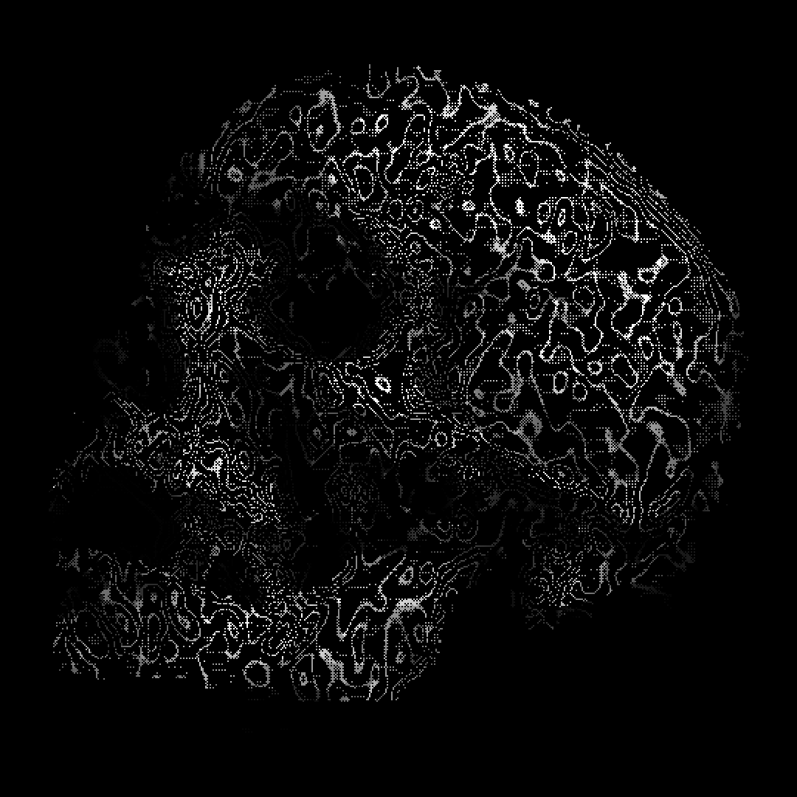

ENTRY 1/26/22
What is the relationship between our mortality and the importance of morality?
Read time: 20 minutes
Preamble
This is a reformat of a anthology I wrote in high school. The work follows an unorthodox structure that deserves some explanation. The introduction section describes a overarching philosophical question and my personal connections and thoughts regarding it. Note that the introduction was written prior to any proper research, and only is a surface-level discussion of my question. Next, the history will provide a brief summary of events and works that relate to my central question. The majority of the anthology is within the three artifacts, which are each an in-depth analysis of works that provide significant insight into how my question has been addressed throughout history. And lastly, the conclusion speaks for itself.Introduction
The main thing that differentiates us from animals is our
ability to defy our instincts. Our free will means that we are able to decide our fate and the
fate of others. That is an extremely daunting responsibility, and I believe that is why we cling
to different moral codes. However, we are the same as animals in the fact that our time on
earth is limited. This concept of the inevitability of death and its impact on our decisions has
always intrigued me. And by analyzing these two concepts separately, I realized how much
they interconnect.
Religion, in particular, has intrigued me with its strong link between death and
morality. Many religions base their importance of moral actions on how they impact what
happens to you in the afterlife, whether that is a concept of Heaven or Karma. I noticed that
often in western culture, death is perceived as something to be dreaded. From this, I always
wondered why the inevitability of our deaths made us focus so strongly on our present
actions. For some, it’s a case of not ending off with any regrets, and for others, it’s a
completely religious motivation.
A fun thought experiment I have been asked is something along the lines of "If you
could live forever, what would you do?". While it's interesting to think about all the
possibilities, one thing I always wondered about was how much the impact of my decisions
would matter if I outlived them. In a grander sense, if I lived beyond the repercussions of my
actions, would it matter if I made moral decisions? Something else that I considered is if
everyone were immortal, couldn't they also outgrow the negative and positive impact I’ve
had upon them? If we could never die, then why would we need pain, and if we never felt
pain, then why would one need empathy?
Something else that sparked my interest in this subject was how when I talk to
people much older than myself, they often reflect on the things they regret doing to others.
Especially when I was little, my first thought was why wouldn’t they just go back and fix their
mistake. However, hearing all these stories of things people wished they did, or ways they
wished they acted helped me realize something. I thought to myself that perhaps the reason
people put so much emphasis on morality is a hope to alleviate the regrets of our ancestors
long after they have passed. It is impossible to make the right decision every second of
one's life, and someone can’t fix all the impacts their actions had on the people around
them, but perhaps by passing experiences and advice forward, one can hope that future
people can live on with the lessons they learned long after they’re gone.
Morality and mortality are complicated, and together they feed unsolvable
existential questions. The only thing that is certain in life is that one day it will end, and I
hope to explore how this fact impacts the decisions we make during our time on Earth. Why
do we place such importance on making moral actions while we are here? Would we still
place importance on our actions if we were immortal?
History
A brief summary of some occurrences that contributed to my “big question”.
The punishment of Prometheus in Greek mythology In ancient Greek mythology, Prometheus defied the gods and stole the ancient fire, giving it to humanity to advance civilization. His punishment for stealing fire was that he was bound with chains and an eagle would eat out his immortal liver every day. Prometheus and his actions are often idolized, especially during the Romantic period. From his story stems the concept of a Promethean Hero, one who defies authority and traditional moral laws. The Promethean Hero signifies an intuitive, independent practice of moral decision-making. Instead of relying on established rules, Prometheus made his decision based on his own virtues and ambitions. Additionally, his immortality serves as a way to exemplify the inescapable nature of the consequences of one’s actions. Although Immortality is often revered, this tale demonstrates Prometheus’ immortality being used against him. This concept reflects the idea that death could be seen as a gift; it provides emancipation from the consequences of our actions. Plato’s, Apology of Socrates (399 BCE) The Apology of Socrates records the speech of Socrates during his trial. Most significantly, Socrates addressed the jury at the end of his trial, famously demonstrating a lack of fear regarding his death. Socrates imagined two possible outcomes after his execution, an endless sleep or a transition to another place. He argued that endless sleep is nothing to be scared of, comparable to a normal dreamless rest. And alternatively, he argued that if his soul advanced to a new realm, that he could continue to learn and explore. Additionally, the last line of Plato's writing quotes Socrates’ departure with the saying, “The hour of departure has arrived, and we go our ways - I to die, and you to live. Which is better God only knows.” Book of Ecclesiastes (~450-200 BCE) A heavy influence of western culture, as promoted through Christianity, is the book of Ecclesiastes. Ecclesiastes is one of the books within the Christian Old Testament, and one of the Ketuvim within the Hebrew Tanakh. An overarching subject of Ecclesiastes is mortality and judgment. The writing often paradoxically discusses the Earthly impermanence of a single individual’s decisions, as well as the judgment of their actions by God. Its passages also signify that each decision matters and will be judged on the day of death. Death, and in tandem, divine judgment are used as a motivator to follow the moral doctrines of God. Martin Luther Posts the 95 Theses to the Church in Wittenberg (1517) A common aspect of the Christian faith is the belief in reaching salvation, or the forgiveness of sins. The importance of salvation lies in the fact that it signifies an afterlife in Heaven. The perception of death in the Catholic denomination is that of a looming destination, the time of judgment. They place the utmost importance on your current actions to avoid purgatory after death. However, prior to the Reformation, the Catholic church sold “indulgences”, which could absolve sins and guarantee salvation. Indulgences infuriated Martin Luther, who posted 95 theses opposing commoditable indulgences on the door of a church in Wittenberg. The actions of Martin Luther is one of the sparks of the Protestant Reformation, causing a huge paradigm shift towards the practice of independent atonement. This focus on the individual instead of a Catholic authority meant that people developed their own interpretations of the Bible, including different moral tenets to avoid purgatory. Maria Van Oosterwijck’s Vanitas Still Life (1668) Oosterwycks painting is one of many examples from the 1600s of the vanitas still life genre of painting. These paintings rely heavily on symbolism to depict a clear message on the ephemeral nature of life and the futility of self-gratification (similar to the book of Ecclesiastes). Oosterwycks painting specifically uses wine, flowers, and instruments that surround a skull to signify the impermanence of worldly pleasure and the importance of actions on the chances of redemption. This style of artwork exemplifies an early perspective on death and its inevitability, pushing a sense of worthlessness towards vanity and a focus on upholding the teachings of Christianity. While paintings such as Oosterwijck’s all had the same message regarding pursuits and the certainty of death, they also serve as a powerful call for self-reflection about one’s actions. Friedrich Nietzsche’s, The Gay Science (1882) and On the Genealogy of Morality (1887) The philosophy and dialogue of Nietzche can be viewed as extremely jarring, especially in the pretext of the time period of his works. Nietzsche attacked Christians, denoting their tenets as “slave morality”, formulating the idea that Christians made virtues out of their cowardice. Nietzsche proclaimed that the moral principles defined by Christianity, as well as the concept of divine judgment, is built on a fantasy of revenge towards their historical oppressors. From his contention with Christianity and divine purpose, Nietzsche is also well known for his nihilistic beliefs. He claimed the acceptance that life has no intrinsic purpose allowed us to overcome old values and dictate our morals based on our own beliefs and aspirations. The Electric Chair (~1890) The electric chair is a form of execution that stemmed from the late 1800s, as a response to the inhumane nature of botched hangings. The idea came from Alfred P. Southwick, after witnessing the near-instant death of a man who touched the terminals of a generator. The electric chair, as well as execution in general, are the source of heated ethical debates. Two moral issues arise in the debate of capital punishment, does the fear of death serve as a proper deterrent against crime, and is it ever ethical to take a life, even one of a murderer.
Artifacts
Artifact 1 - Ecclesiastes
Excerpt - Ecclesiastes 3
There is a time for everything,
and a season for every activity under the heavens:
a time to be born and a time to die,
a time to plant and a time to uproot,
a time to kill and a time to heal,
a time to tear down and a time to build,
a time to weep and a time to laugh,
a time to mourn and a time to dance,
a time to scatter stones and a time to gather them,
a time to embrace and a time to refrain from embracing,
a time to search and a time to give up,
a time to keep and a time to throw away,
a time to tear and a time to mend,
a time to be silent and a time to speak,
a time to love and a time to hate,
a time for war and a time for peace.
What do workers gain from their toil? I have seen the burden God has laid on the human race. He has made everything beautiful in its time. He has also set eternity in the human heart; yet no one can fathom what God has done from beginning to end. I know that there is nothing better for people than to be happy and to do good while they live. That each of them may eat and drink, and find satisfaction in all their toil—this is the gift of God. I know that everything God does will endure forever; nothing can be added to it and nothing taken from it. God does it so that people will fear him.
Whatever is has already been,
and what will be has been before;
and God will call the past to account.
And I saw something else under the sun:
In the place of judgment—wickedness was there,
in the place of justice—wickedness was there.
I said to myself,
“God will bring into judgment
both the righteous and the wicked,
for there will be a time for every activity,
a time to judge every deed.”
I also said to myself, “As for humans, God tests them so that they may see that they are like the animals. Surely the fate of human beings is like that of the animals; the same fate awaits them both: As one dies, so dies the other. All have the same breath; humans have no advantage over animals. Everything is meaningless. All go to the same place; all come from dust, and to dust all return. Who knows if the human spirit rises upward and if the spirit of the animal goes down into the earth?” So I saw that there is nothing better for a person than to enjoy their work, because that is their lot. For who can bring them to see what will happen after them?
The ethical principles we adopt are heavily influenced by our culture and experiences. And one massive cultural landmark, and such, an influencer of moral codes throughout history is the Bible. Many people look toward their interpretations of the Bible to make tough moral decisions. However, Ecclesiastes is unique in its humanistic approach to morality by contextualizing it with death. Ecclesiastes has a strong focus on the ephemeral nature of human life and seeks to justify how we should spend our limited time on Earth. Ecclesiastes 3 in particular is interesting to fixate on due to it’s heavy focus on the actions within our lifetime, as well as its introduction to divine judgment.
This chapter of Ecclesiastes starts off by describing contrasts within the human condition through the use of the repeating phrase “a time to…”. Each line introduces two opposite ideas, emphasizing that within each dichotomy, there is a “time” for each side. The first iteration of the ”time to” pattern is “a time to be born and a time to die”, immediately hammering in the certainty of death. Prefacing the entirety of the passage with death establishes that each experience and action is a fragment within the short period of existence, birth and death mark the “boundaries of life under the sun” (qtd. In Guzik). This demarcation is also restated near the end, “all come from dust, and to dust all return”, alluding to the creation story in Genesis. The use of the remaining “a time to” lines also signifies the commonality and repetitive nature of human action. Our lives have a cycle of choices in a continuous pattern throughout our existence and the same cycles will perpetuate in the lives of all people following. From this, nothing truly “new” can emerge, undermining grand achievement in favor of present action. (Harris). These remaining lines also show how limited we are in the amount of decisions we are able to make before death.
Another notable quote from this chapter is “everything God does will endure forever”. It is safe to assume that this line is referring to the eternal aspect of nature. When compared to the longevity of nature, human pursuits are temporal and insignificant. The aspect of nature as being infinite in comparison to the short-lived influence by the individual further emphasizes that after death, our influence is lost and our achievements lose most of their meaning. Overall providing a message that our impact is just as vulnerable to decay as our own bodies.
The most frightening aspect of death alongside its inevitability is its uncertainty, “the circumstances in which we will die are not predictable. Death’s time, place and circumstances—as a result of old age, accident or illness—are beyond reach of human knowledge” (Baeke). We will never know when, or how we will die, making the importance of our actions all the greater. We do not know how many more “times” or decisions we have left, therefore we cannot take any moment for granted.
The passage attempts to alleviate the unpleasant reminder of death by emphasizing the current moment and doing “good” with the time you have. This is described in the claim that the best way for someone to live is to “be happy and to do good while they live”. Ecclesiastes 3 does not attempt to define what “good” is, but aims to remind you that time is limited. It encourages you to do “good” (whatever that may be) while you still can. Overall, Ecclesiastes, much like the rest of Christianity “does not provide a clear and detailed road map to a just society, but it does invite and encourage us to undertake the journey” (Fitzgerald). While this passage provides a harsh reminder of how insignificant and short an individual’s life is, it establishes that this meaninglessness is not an excuse to be immoral. Rather, it implores people to do what's best for their own and others' happiness.
With this rather grim view towards human existence, the message of this passage could be misinterpreted as encouraging acting out of self-interest. However, through the introduction of “judgment”, a reason and drive is provided to follow the moral guidelines defined within the Bible. The passage proclaims that “God will bring into judgment both the righteous and wicked”. This statement is then followed by “there will be a time for every activity, a time to judge every deed”, directly linking with the opening lines, emphasizing that each decision has ethical significance. This repetition reinforces that everything you do will be held against moral standards that transcend human law.
The concept of judgment is also stated in clearer terms at the end of Ecclesiastes 12, which asserts that “God will bring every deed into judgment, along with every hidden thing, whether good or evil”. This ending sentence not only uses the dichotomy of “good” and “evil”, but also contextualizes their definition of “good” and “evil” as relating to the Ten Commandments by preceding this line with “keep His [God’s] commandments''. Divine judgment is used to unify the inevitability of death with the importance of morality. It forewarns that each decision within your life-span will be judged according to a moral code and each of these decisions is part of the march towards the inescapable destination of death.
Additionally, one possible interpretation of divine judgement within Ecclesiates is of “particular judgment”, being a post-mortem personal judgement by God. If particular judgement was the intended meaning of “judgment” within Ecclesiastes, death serves an even more significant role because it is the deadline of when all your actions will be weighed on a celestial moral scale. An outlook towards post-mortem judgment also aims to “rectify pre-mortem injustices” (Takeuchi) creating incentive to be moral during one's time on earth, in avoidance of punishment during the afterlife. The fear of judgment only holds its impact over those who believe in it. However, the inevitability of death is universal, and the call to do good with the time you have is just as powerful without a divine moral judge. Ecclesiastes is so powerful because it can be viewed solely for it’s highlighting of death, as well is it’s idea of judgement.
> Sources Cited
Baeke, Goedele, et al. “‘There Is a Time to Be Born and a Time to Die’ (Ecclesiastes 3:2a): Jewish Perspectives on Euthanasia.” Journal of Religion and Health, vol. 50, no. 4, 2011, pp. 778–795., https://link.springer.com/article/10.1007/s10943-011-9465-9.Fitzgerald, Paul. “The Horizon of Faith.” Religious and Catholic Ethics, Markkula Center for Applied Ethics, Santa Clara University, 1998, www.scu.edu/ethics/focus-areas/religious-and-catholic-ethics/resources/the-horizon-of-faith/.
Guzik, David. “Ecclesiastes Chapter 3.” Enduring Word, https://enduringword.com/bible-commentary/ecclesiastes-3/.
Harris, Stephen L. “Ecclesiastes.” Understanding The Bible, 5th ed., Mayfield Publishing Company, 1999, pp. 252–256.
Takeuchi, Kumiko. “Death and Divine Judgment In Ecclesiastes.” Durham University, Durham e-Theses , 2016, http://etheses.dur.ac.uk/11382/1/Takeuchi_Diss_2015.pdf?DDD32+.
Wright, Stafford J. “Ecclesiastes” The Expositor’s Bible Commentary, Volume 5 (Grand Rapids, Michigan: Zondervan, 1992)
This source is quoted within Guzik.
Artifact 2 - Andy Warhol: Little Electric Chair(s)
One artist that had a unique obsession with mortality is Andy Warhol. Warhol explored the public perception of death; specifically how tragedy is propagated throughout the masses by the media in his “death and disasters” series of silkscreen paintings. All of his works share a similar message about the public perception of death. However, his Little Electric Chairs series is extremely interesting, unlike his other pieces, the electric chair does not depict a gruesome event that has already happened, but a prospective tool for killing.
Little Electric Chair depicts a chair dubbed ‘Old Sparky’ at the Sing Sing penitentiary in New York (Halperin). While the dark and grainy texture creates a foreboding mood, the actual content of the image is fairly unassuming; an empty chair in a room. However, when the piece is contextualized with its name and history, the terror and intent of the paintings is revealed. The fact that the subject is not an imaginary or ancient device, but a real, modern instrument for killing, invokes a harsh realization and a sense of panic. The reality that people have died in this chair gives the piece its weight. The electric chair started as a more humane method of execution, but it has become an infamous symbol of the controversy surrounding capital punishment, especially during Warhol’s time.
The electric chair, like other forms of capital punishment, is a symbol of Hobbes’s leviathan (Lee). A main rationale for capital punishment is deterrence, exploiting self-preservation to prevent crime. Regardless of the argued effectiveness of capital punishment as a deterrent, the tools used for execution serve as a clear icon of death and our fear of it. Warhol's painting embraces this emblematic representation of fear extremely well. The high contrast emphasizes the chair, similar to a spotlight. There is no natural light, people, or objects other than the chair, creating a sinister and foreboding scene. The prints understand that the power of the electric chair doesn’t come from its lethality, but its idle stages. The chair is not actively doing anything, and its yielding stance creates more anxiety than a depiction of it in action. The terror comes from the fact that the chair will remain inactive, unchanged, and waiting. This machine acts as a constant looming reminder to stay in line with moral guidelines defined within the law. The intended target of this fear is not the convicted criminal, but the general public. The electric chair and press reports of its use aim to be a warning memento for the public eye.
In an interview with Gene Swenson, Warhol is quoted describing how “when you see a gruesome picture over and over again, it doesn’t really have any effect.” (Swenson). While Little Electric Chair captures a sense of fear extremely well, Warhol acknowledges that the strong reaction to death invoked by his prints is quickly diminished with repetition. Not only did Warhol often paint his prints in a series, but his source material comes from press photos that have been copied thousands of times. A single, isolated view of this painting is horrifying, but the repetition quickly desensitizes us. Warhol mimics the repetitive onslaught of dreadful images by the press. He uses this repetition to convey how the ceaseless depictions of death in the media quickly takes away from what would ordinarily be a visceral reaction to such imagery. Warhol expresses how death's constant coverage in the news, even today, “distances us from the intensity and seriousness of the topic.” (Morgan). It is easy to quickly become numb to these paintings, and this was most likely Warhols intent. His paintings convey how constant, universal coverage destroys the intense reaction towards death within the public, undermining the effectiveness of viewing death as a cautionary lesson.
> Sources Cited
Halperin, Rick. “[Deathpenalty] Death Penalty News----TEXAS, N.Y., S.C., FLA., LA., ARK., NEB., WYO., USA.” WashLaw, Washburn University, 26 Apr. 2019, http://lists.washlaw.edu/pipermail/deathpenalty/2019-April/005031.html.Lee, Pamela. “Death by Media: Warhol’s ‘Electric Chairs’ .” L'ère Électrique = the Electric Age, by Silvestra Mariniello et al., Presses De L'Université D'Ottawa, 2011, pp. 181–206.
Morgan, Lucas. “Andy Warhol's ‘Death and Disaster’ Series.” SevenPonds Blog, 15 Mar. 2019, https://blog.sevenponds.com/soulful-expressions/andy-warhols-death-and-disaster-series.
Swenson, Gene. “Andy Warhol.” 'What Is Pop Art?" Interviews with Eight Painters, Nov. 1963.
Artifact 3 - Damien Hirst: For The Love Of God
Perhaps one of the most eye-grabbing and disturbing combinations possible, Hirsts For The Love Of God is a platinum cast of a human skull covered in diamonds. The piece has a heavy sense of irony between its presentation and theme. By exploiting and manipulating common themes of death and luxury, this sculpture explores the connection between our mortality and how we justify our worth in life.
For The Love of God utilizes two of the most universal symbols for mortality and vanity. The skull is arguably one of the most recognizable symbols of our mortality, and diamonds act as a symbol of wealth and material beauty. Hirst uses this combination of mediums to relate the inevitability of death with the living’s obsession with wealth. The use of diamonds and platinum, in particular, holds significance because these materials are near-indestructible and forever-lasting. These materials are used to convey “the idea that the indestructible luxury of the object [represents] a victory over decay and death” (Fuchs). With our flesh decays our image, all that remains is a featureless impression of us, as represented by the skull. Long after our bodies and the memory of us have rotted away, the diamonds and platinum remain in a cast of our archetype, no definable features, such as the face remain. This piece suggests that all that can be associated with us after our death is our perceived value. With this grim view of our legacy after death, we are incentivized to ask what do our actions matter beyond the legacy we decorate ourselves with after we die.
For the Love of God is intended to act as a memento mori, being a symbol for the inevitability of death (For The Love of God). However, this piece’s intent is different from other forms of art associated with memento mori. More specifically, another art genre associated with this concept is vanitas, which focuses on the vanity and futility of pleasure and material achievement (Britannica). Similar to vanitas, this piece immediately grasps your attention with the contrast of attainment and mortality, both symbols are intertwined and are immediately apparent. However, Hirst’s message regarding death and our current actions is completely different from many vanitases. Historically, vanitas is usually influenced by Christianity and used their tone of impending death to promote following the moral doctrines of Christianity and condemn the pursuit of material wealth and pleasure. Hirst's sculpture, however, conveys a sense of glory in acquisition during life; “compared to the tearful sadness of a vanitas scene, the diamond skull is glory itself. Covered by diamonds as by mail, it became an object of eternal life in death” (Fuchs). His work still contains the somber tone of death through the use of a skull but defies this inevitably by embracing complete indulgence and decadence.
Hirst challenges another common intent in many vanitases, which is “to focus believers’ attention on the afterlife” (Biles) from a spiritual standpoint. The art piece is only focused on the earthly remains, rather than the soul. This rejection from the spiritual aspect of vanitas is not only reflected in the sculptures presentation, but also directly from the artist; “God’s f*****d off” (qtd. In Series). This quote from Hirst has a striking resemblance to Nietzsche’s “God is dead”. Hirst shares a similar attitude towards God and religion as Nietzche, and from this perspective, Hirst disconnects his work from any divine motivation. In contradiction to vanitas, his work conveys one of “Nietzche’s well-known critique[s]; investment in an afterlife effectively devalues the present, earthly life”. The piece acknowledges the fleetingness of life, but with its disconnect from any religious idea of the afterlife, Hirst proclaims that the decadence displayed on his piece is “the only thing of real value in a brief life” (Biles).
> Sources Cited
Biles, Jeremy. “For the Love of God: Excess, Ambivalence and Damien Hirst's Diamond Skull.” The Uses of Excess in Visual and Material Culture: 1600-2010, by Julia Skelly, Ashgate, 2014, pp. 225–243.Britannica, The Editors of Encyclopaedia. "vanitas". Encyclopedia Britannica, https://www.britannica.com/art/vanitas-art. Accessed 2 December 2021.
“For the Love of God.” Damien Hirst, Bureau for Visual Affairs, www.damienhirst.com/for-the-love-of-god.
Fuchs, Rudi. “Victory Over Decay.” Damien Hirst, 2007, www.damienhirst.com/texts/20071/jan--rudi-fuchs.
“Series of Iconic Hirst Prints Goes on Display at the National Gallery of Art in Washington .” Damien Hirst, Bureau for Visual Affairs, 25 Aug. 2016, www.damienhirst.com/news/2016/last-supper-at-national-gallery-washington.
Conclusion
Death is a commonality that transcends all culture, language, and history. In fact, death's universality is beyond us, even stars die. But the implications assigned to death are intrinsically human. Additionally, the attempt to define and enforce morality is solely a humanitarian endeavor. It is easy to observe how universal the human focus on death and morality is across cultures and history. However, the extent to which these ideas are interconnected within philosophy, religion, and law is much greater than I had originally anticipated. Our fascination with death has been ingrained in all cultures for the entirety of human history, but it’s correlation to morality has existed for as long as man has been able to communicate.
The inevitability of death has been applied to a variety of philosophies. One trend I observed is our certain demise being used to devoid things of meaning. This invalidation of meaning occurs from the fact that “(a) death undermines the predictability and controllability of one’s existence, (b) death eliminates all potential that one has for earning meaning in the future, (c) death reminds people that their existence and the meaning framework that they have constructed will likely be forgotten, and (d) death nullifies the value of one’s life’s achievements.‖” (qtd. in Pyszczynski). However, what is being defined as meaningless through the inevitability of death varies significantly. One end of this view emphasizes the futility of material achievement, you cannot take your wealth with you. Utilizing death to argue against materialism has mainly been used to emphasize the importance of actions over possessions, usually in a moral context. In an opposing view, a similar sense of purposelessness is applied to behavior. The idea of vanity is directly contradicted by the idea that within the futility of life, the only thing of significance is material gain and pleasure while alive; proposing that morality doesn’t matter because we are going to die anyway. Both viewpoints exploit the ephemeral nature of life in justification for a moral ideology, despite being philosophically contrary to each other.
Additionally, another trend is death being used to add urgency and incentive towards action. “Human systems of meaning, morality, and religion took on death-denying functions that added urgency to them and changed the end states toward which they directed behavior” (Pyszczynski). The sense of urgency formed by death has been utilized by both religion and law. Death has been used as the demarcation for the afterlife, providing moral incentive while on Earth for the promise of divine reward. And the fear of death has been exploited by the law to incentivize following established moral principles.
As we push further into the modern age, we may be able to address the causes of death with advancements in technology; but our mortality remains inevitable. The fight against death is the ultimate futility, the same futility that has loomed over us forever. As we continue to learn about our biology and our weaknesses, we formulate ways to delay our eventual demise. Because of public health improvements, “Over the last 200 years, U.S. life expectancy has more than doubled to almost 80 years” (Ninde). While we may be able to prolong our lives, immortality is currently outside of our reach. Because of this, our mortality will always remain in the pretext of our minds and culture. Similarly, the struggle to define what’s moral is just as persistent and universal as death. The attempt to empiricize morality is impossible. There will always be constant debate and interpretations over what is moral. Every individual applies their own unique abstract moral principles to their lives; influenced by their experiences as well as their cultural, religious, and political identities (Ellemers). As long as humans are unique, our set of moral ideals will be equally unique. However, death serves as a commonality above all culture and law. Because of this, the relationship between mortality and morality will hold significance as long as humans exist. Both concepts are fundamental to our psychology and humanity. No matter what direction we take in the future, we will invariably seek to define what's moral and we will always have death as a commonality to justify our moral paradigms.
Death will always influence our lives, it’s part of being human. Our mortality will continue to serve as a focal point for a majority of existential questions, questions that cannot be answered with science and technology. What the future holds is unforeseeable, but one thing is guaranteed; we will die. Regardless of if you decorate your time on earth with diamonds or “good” intentions, the consequences of your actions will eventually fade away. I have also realized that my big question has an ironic tone. Death is a fundamental, concrete truth and morality is an abstract concept. However, we have consistently used one of the most certain aspects of our lives as a way to justify one of the most subjective demonstrations of our humanity.
> Sources Cited
Ellemers, Naomi, et al. “The Psychology of Morality: A Review and Analysis of Empirical Studies Published from 1940 through 2017.” SAGE Journals, Jan. 2019, https://journals.sagepub.com/doi/full/10.1177/1088868318811759.Heine, Steven J et al. “The meaning maintenance model: on the coherence of social motivations.” Personality and social psychology review : an official journal of the Society for Personality and Social Psychology, Inc vol. 10,2 (2006): 88-110. doi:10.1207/s15327957pspr1002_1
This Resource Was Quoted in Pyszczynski.
Ninde, Claire. “200 Years of Public Health Has Doubled Our Life Expectancy.” San Juan Basin Public Health, 25 Sept. 2020, https://sjbpublichealth.org/200-years-public-health-doubled-life-expectancy/.
Pyszczynski, Tom, and Pelin Kesebir. “Culture, Ideology, Morality, and Religion: Death Changes Everything.” ResearchGate, Jan. 2011, https://www.researchgate.net/publication/228172741_Culture_Ideology_Morality_and_Religion_Death_ Changes_Everything.